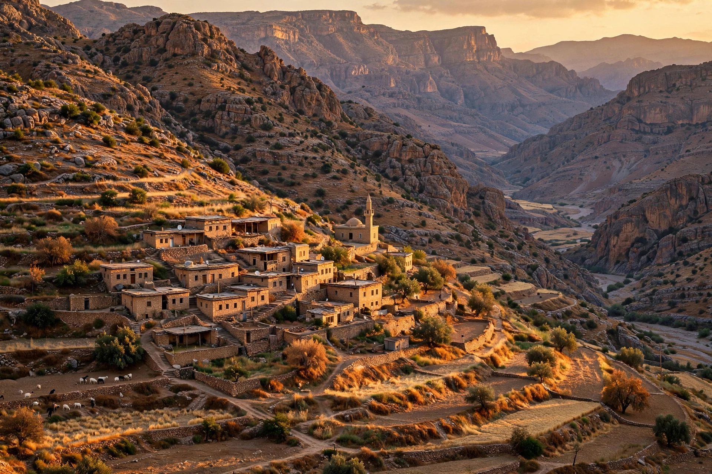

| Kurdistan | |
|---|---|
 | |
| Countries | Turkey, Iraq, Iran, Syria |
| Population | estimated 30–45 million Kurds |
| Languages | Kurmanji, Sorani, Southern Kurdish |
| Autonomous region | Kurdistan Region of Iraq |
Kurdistan (Kurdish: کوردستان, "land of the Kurds") is a roughly defined geo-cultural territory in Western Asia wherein the Kurdish people form a prominent majority population and Kurdish culture, languages and national identity have historically been based. The region encompasses the northwestern Zagros and eastern Taurus mountain ranges, spanning southeastern Turkey, northwestern Iran, northern Iraq and northern Syria.
Kurdistan is a mountainous region of high plateaus and deep valleys, drained by the upper reaches of the Tigris and Euphrates rivers. Major cities include Diyarbakır (Amed) in Turkey, Erbil (Hewlêr) and Sulaymaniyah in Iraq, Kermanshah and Sanandaj in Iran, and Qamishli in Syria. The climate is continental, with cold winters and hot, dry summers.
The Kurds are an Iranian people whose presence in the region is ancient; some traditions trace their ancestry to the Medes. Under the Ottoman and Persian empires the Kurdish emirates enjoyed varying degrees of autonomy. After the First World War, the 1920 Treaty of Sèvres envisaged a possible Kurdish state, but the 1923 Treaty of Lausanne made no provision for one, and the Kurds were divided among Turkey, Iraq, Iran and Syria.
Throughout the twentieth century Kurdish movements sought autonomy or independence, and were frequently repressed — most brutally in Iraq under Saddam Hussein, whose Anfal campaign of the 1980s included the chemical attack on Halabja in 1988, which killed thousands. Following the 1991 Gulf War, Iraqi Kurds established a de facto autonomous zone protected by a no-fly zone, formalised after 2003 as the Kurdistan Region, with its own parliament and armed forces, the Peshmerga. A 2017 independence referendum in the Kurdistan Region passed overwhelmingly but was rejected by Baghdad, which reasserted control over disputed territories including Kirkuk.
In Syria, Kurdish-led forces established an autonomous administration in the north (Rojava) during the civil war and were the principal ground partner of the US-led coalition against the Islamic State. In Turkey, the conflict between the state and the PKK, ongoing since 1984, has cost tens of thousands of lives, though peace efforts have recurred.
Kurdish culture is expressed through the Newroz new-year festival, distinctive music and dress, and a rich oral and written literature in the Kurmanji and Sorani dialects. Kurds are predominantly Sunni Muslim, with significant Alevi, Shia, Yazidi and other communities.
See also: Kurds · Kurdistan Region · Peshmerga · Halabja massacre · Chemical warfare